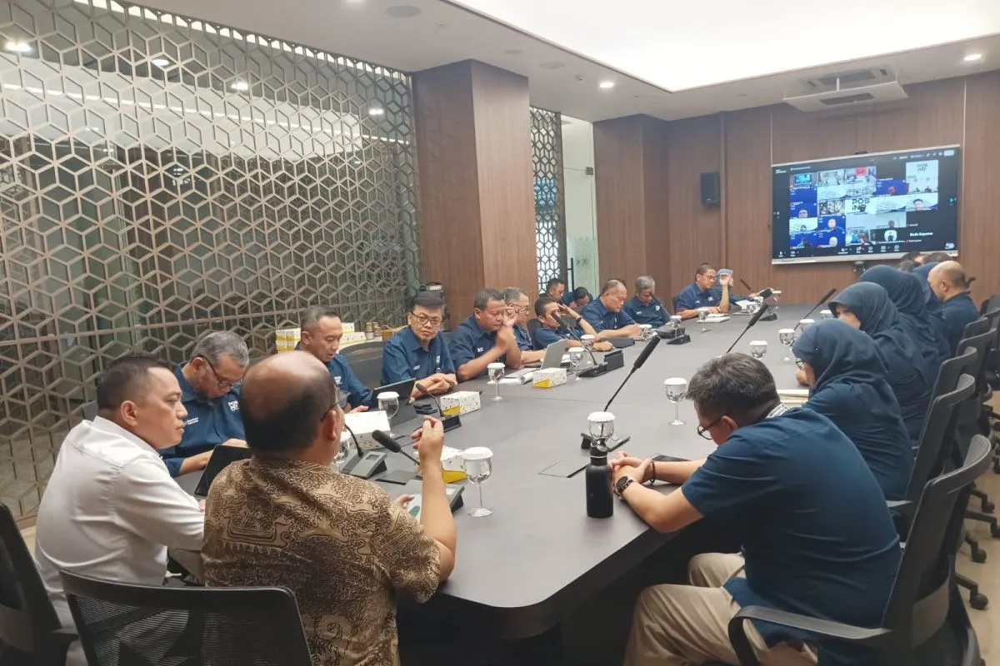

Komisi Pemberantasan Korupsi (KPK) terus mendorong penguatan tata kelola perusahaan serta pembangunan budaya antikorupsi di lingkungan PT Pos Indonesia (Persero). Upaya tersebut dilakukan sebagai bagian dari strategi pencegahan korupsi agar perusahaan milik negara mampu menjalankan kegiatan usahanya secara transparan, akuntabel, dan berintegritas.
Dorongan tersebut disampaikan oleh Pelaksana Tugas (Plt.) Direktur Antikorupsi Badan Usaha KPK, Arend Arthur Duma, dalam kegiatan Sharing Expert bertema "Pertanggungjawaban Pidana Korporasi dalam Bingkai Business Judgment Rule (BJR)" yang diselenggarakan oleh PT Pos Indonesia di Jakarta. Kegiatan ini bertujuan meningkatkan pemahaman jajaran perusahaan mengenai prinsip tata kelola yang baik serta pencegahan tindak pidana korupsi di lingkungan korporasi.
Dalam pemaparannya, Arend menjelaskan bahwa Business Judgment Rule (BJR) merupakan prinsip penting dalam tata kelola perusahaan yang memberikan perlindungan kepada direksi atau pengurus perusahaan ketika mengambil keputusan bisnis secara profesional, beritikad baik, penuh kehati-hatian, dan sesuai dengan ketentuan peraturan perundang-undangan. Prinsip ini diharapkan dapat memberikan kepastian hukum bagi para pengambil keputusan sehingga mereka dapat menjalankan tugas tanpa rasa takut sepanjang tidak terdapat unsur penyalahgunaan wewenang atau niat jahat.
KPK menekankan bahwa penerapan prinsip BJR harus diiringi dengan sistem tata kelola perusahaan yang kuat. Tata kelola yang baik meliputi transparansi, akuntabilitas, tanggung jawab, independensi, serta kewajaran dalam setiap proses bisnis. Dengan demikian, perusahaan dapat meminimalkan potensi penyimpangan dan meningkatkan kepercayaan masyarakat terhadap pengelolaan badan usaha milik negara.
Selain memperkuat tata kelola, KPK juga mendorong terbentuknya budaya antikorupsi di lingkungan perusahaan. Budaya tersebut tidak hanya diwujudkan melalui kepatuhan terhadap peraturan, tetapi juga melalui penanaman nilai-nilai integritas, kejujuran, profesionalisme, dan tanggung jawab kepada seluruh jajaran perusahaan. Menurut KPK, pencegahan korupsi akan lebih efektif apabila menjadi bagian dari budaya organisasi yang dijalankan secara konsisten oleh seluruh pegawai dan pimpinan perusahaan
Melalui kegiatan ini, PT Pos Indonesia diharapkan mampu memperkuat sistem pengendalian internal, meningkatkan kualitas pengambilan keputusan bisnis, serta membangun lingkungan kerja yang bersih dari praktik korupsi. KPK menegaskan bahwa upaya pemberantasan korupsi tidak hanya dilakukan melalui penindakan, tetapi juga melalui pendidikan, pencegahan, dan penguatan tata kelola di berbagai lembaga negara maupun badan usaha milik negara